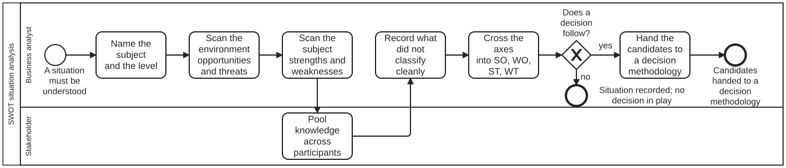

Generated from
cat-harness/processes/process/swot-analysis.bpmnbygen-processes-viz.ts— do not edit here. All processes
Process_SwotAnalysis · advisory · 7 step(s)
Situation analysis over two axes — internal/external and helpful/harmful — producing the raw material a decision is made from, and NEVER the decision.
THE ONE STRUCTURAL CLAIM THIS DIAGRAM MAKES: there is no path through it that decides anything. Every completed run ends either at a recorded situation or at a handoff into options-analysis, which selects a decision methodology. That is not a modelling preference; it is the swot methodology’s stated refusal drawn so it cannot be skipped. Gürel and Tat’s conclusion is that SWOT gives “the raw material needed to perform more in-depth strategic analysis” but “cannot show them how to achieve a competitive advantage”, and that it must not become “an end in itself”. A diagram with a decide-here activity would contradict the methodology it implements.
WHY EXTERNAL IS SCANNED FIRST: Weihrich (1982), reported in the source, holds that the only logical starting point is opportunities and threats — they are outside the organisation and largely beyond its control, and must be managed using its strengths and weaknesses. The order is his argument, rendered; it is not a house preference.
WHAT IT DOES NOT DO: it does not rank the factors it finds. The source is explicit that SWOT has no way to prioritise — “quantity does not mean quality” — and the long list of quantitative extensions it surveys (AHP, ANP, their fuzzy variants, SMART, SMAA-O, MADM, TRIZ) is NOT adopted here. An activity that scored or weighted factors would be inventing the part of the method that does not exist.

| lane | role | what it does here |
|---|---|---|
| Business analyst | business-analyst |
Performs the scan and the crossing. This lane owns the analysis and owns nothing else: it does not authorise, and it does not choose between options. Its deliverable is four lists, the four matched strategies, and an explicit record of what could not be classified. |
| Stakeholder | stakeholder |
Consulted, in a lane of their own because the source names group discussion as a property of the method rather than as good practice around it: SWOT “promotes group discussion about strategic issues” and pools knowledge through participatory techniques. It is also the mitigation for the limitation the source states most sharply — that a list of strengths is “bound up with aspirations, biases, and hope of the individuals involved”. A single analyst producing four lists alone has performed the technique’s shape without the part that checks it. |
Every one of the 7 step(s) is documented.
| step | lane | skill / sub-process | what it does |
|---|---|---|---|
Name the subject and the levelA_FrameSubject |
Business analyst | swot-analysis |
One sentence naming WHAT is being analysed and at WHICH level — individual, organisational, national, international. The source requires this before anything is listed: “the classification of a variable also depends on the purpose of the practice”, and the criteria for assigning a variable to a quadrant “may be more difficult to clarify if the methodology is not used for a company but for a country”. It also bounds the known limitation that SWOT “is rarely deployed at lower than the organization level”, where one scan drives strategy for units its factors do not hold equally for. Naming the level does not remove that risk; it makes it visible in the record. |
Scan the environment opportunities and threatsA_ScanExternal |
Business analyst | swot-analysis |
The external axis, first, per Weihrich. Work the source’s categories of environmental change rather than free-associating: societal, governmental, economic, competitive, supplier and market changes, each item recorded with what it impacts. An opportunity is an external element that gives benefit; a threat is one that could cause trouble. Both are outside the subject and largely beyond its control — that is what puts them on this axis, not whether they feel good or bad. |
Scan the subject strengths and weaknessesA_ScanInternal |
Business analyst | swot-analysis |
The internal axis. Work the source’s functional checklist rather than a blank page: marketing, research and development, management information systems, management team, operations, finance, human resources. A strength gives advantage over others in the field; a weakness places the subject at a disadvantage relative to others. Both are attributes OF the subject. The source’s warning belongs to this step specifically: listing strengths on paper “is very different from testing the organization and experiencing the strengths at work”, so a strength recorded here is a claim, and where evidence for it exists it is cited. |
Pool knowledge across participantsA_GroupReview |
Stakeholder | swot-analysis |
The four lists are reviewed by more than the person who wrote them. This is the method’s own answer to its own bias limitation, and it is a distinct activity rather than advice attached to the scans, because an activity can be recorded as not performed and a recommendation cannot. Disagreement about which quadrant a factor belongs in is an OUTPUT of this step, not a failure of it — it feeds A_RecordAmbiguous. |
Record what did not classify cleanlyA_RecordAmbiguous |
Business analyst | swot-analysis |
Factors that sit in two quadrants, or in none, are written down as such. The source states this as inherent rather than as analyst error: “the same factor can be fitted in two categories. A factor can be a strength and a weakness at the same time.” It adds the two drifts — strengths not maintained become weaknesses, and opportunities not taken but taken by competitors become threats. A scan that silently forced every factor into one quadrant would report a cleanliness the method does not have. This is the same third-state discipline the rest of this repository applies to “could not determine”: an unclassifiable factor is a finding, not a blank. |
Cross the axes into SO, WO, ST, WTA_Cross |
Business analyst | swot-analysis |
The TOWS matching step, and the only step that produces anything actionable. Strengths and weaknesses across, opportunities and threats down, and each cell names the strategy the pairing implies: SO — achieve opportunities that greatly match the strengths; WO — overcome weaknesses to attain opportunities; ST — use strengths to reduce vulnerability to threats; WT — prevent weaknesses, to avoid becoming more susceptible to threats. A SWOT that stops at four lists is the failure the source names as its central one. This step is what the process exists to reach. It produces CANDIDATE strategies, not a chosen one, and they are not ranked — see the process documentation on why no scoring activity exists. |
Hand the candidates to a decision methodologyA_HandOff |
Business analyst | methodology-adoption |
The candidate strategies go to options-analysis, which selects the decision methodology by context and applies it. SWOT does not make that selection and does not make the decision.What is handed over includes the ambiguities from A_RecordAmbiguous and the fact that the candidates are UNRANKED. A receiving methodology that assumed an ordered list would be reading a priority SWOT never established. |
Every one of the 1 decision(s) is documented.
| decision | what decides it | branches |
|---|---|---|
Does a decision follow?GW_DecisionFollows |
Is this scan feeding a choice that has to be made now, or is it standing situation analysis? DELIBERATELY NOT DMN-BACKED. Whether a decision follows is a fact about the caller’s intent, not a function of the analysis’s contents, so there is nothing recurring for a table to compute. dmn’s own test — would the same inputs have to produce the same branch next month — fails here, and a table would assert a repeatability this does not have.Both branches are completed runs. Neither is a skipped step. |
yes → Hand the candidates to a decision methodology no → Situation recorded; no decision in play |